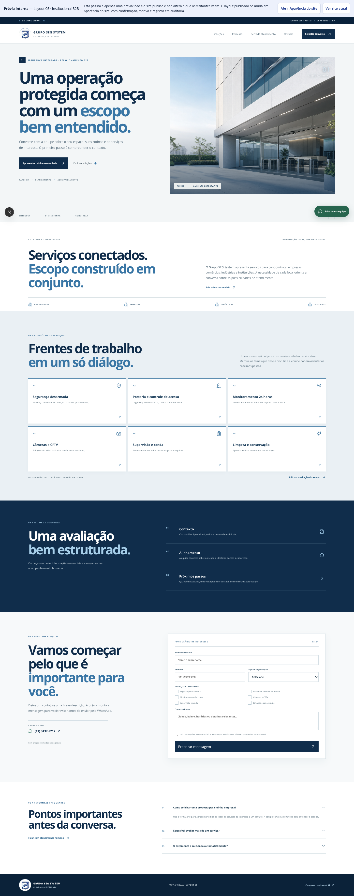
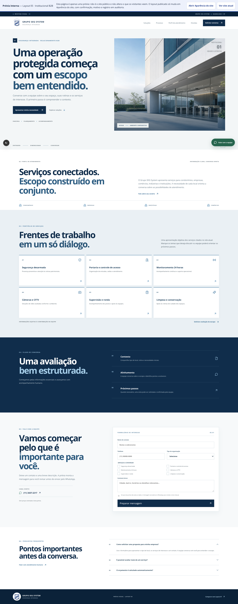
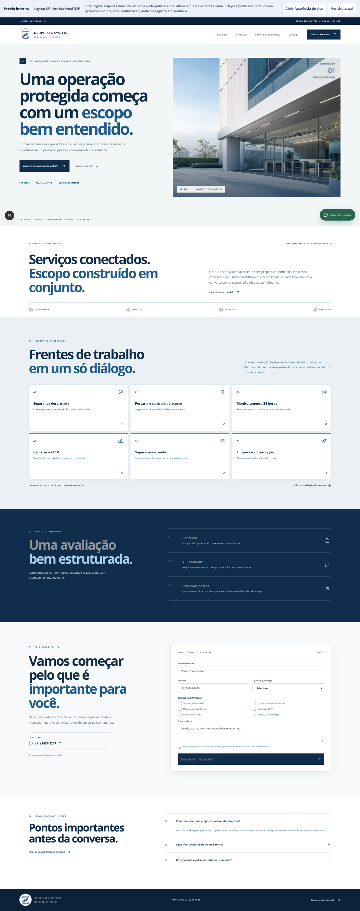
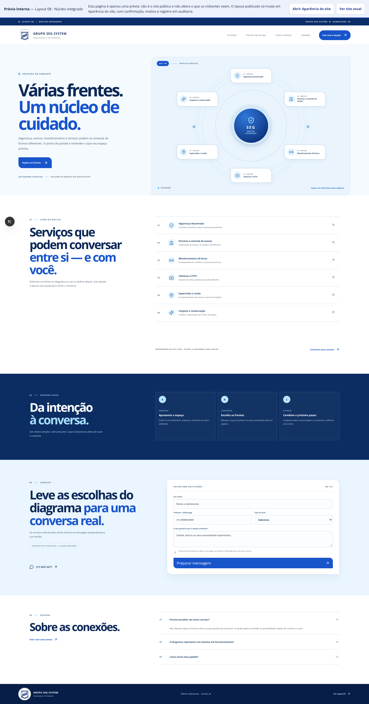
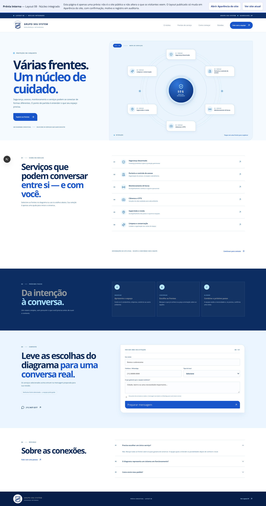

Capturas em Chromium real (1440×900, light), PostgreSQL 17 descartável e servidor Next de verdade. A recolorização acontece só no DOM da screenshot: nenhum CSS de produção foi alterado. Cada linha é uma rota; as quatro colunas usam exatamente a mesma página — só mudam as cores de texto. Textos sobre fundo com imagem/gradiente ficam de fora (o medidor não amostra pixels).




